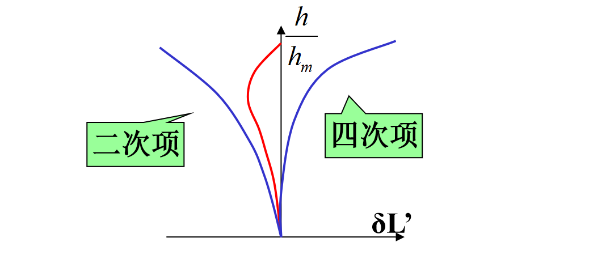
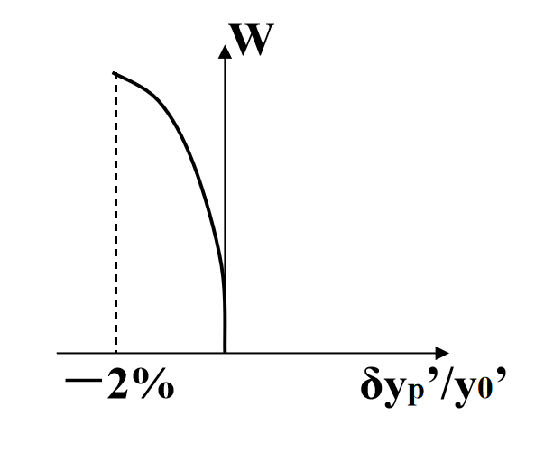
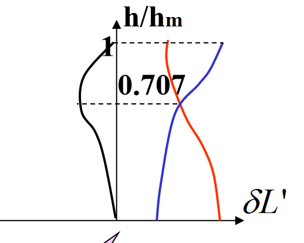
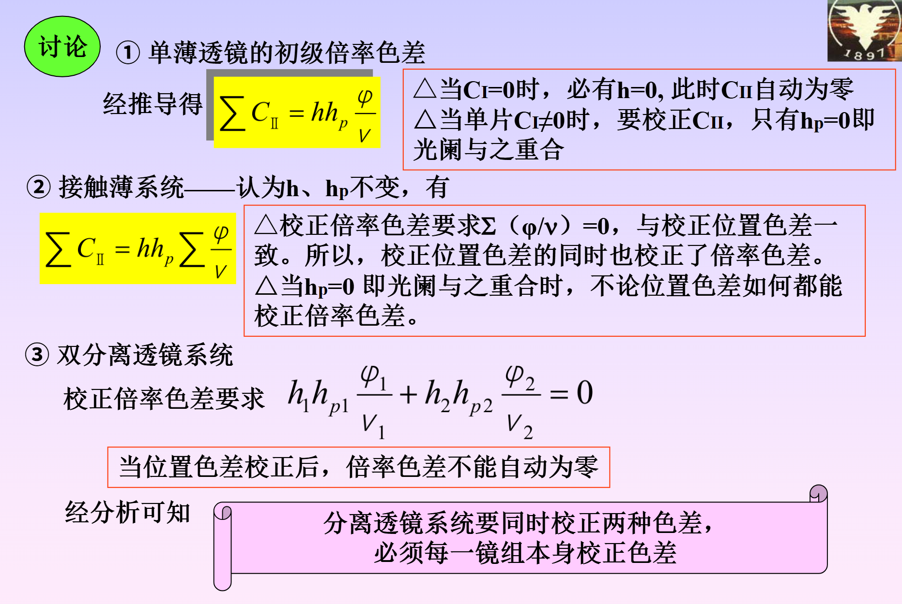

Chapter 7¶
1. 像差分类¶
| 序号 | 像差名称 | 符号 | 分类1 | 分类2 | 分类3 | 分类4 | 现象 | 曲线 |
|---|---|---|---|---|---|---|---|---|
| 1 | 球差 | \(\delta l'\) | 轴上 | 单色 | 宽光束 | 轴向 | 圆弥散斑 | 球差曲线 |
| 2 | 彗差 | \(K_t'\) | 轴外 | 单色 | 宽光束 | 垂轴 | 彗星尾巴 | / |
| 3 | 像散 | \(\Delta x\) | 轴外 | 单色 | 细光束 | 轴向 | 子午/弧矢焦面 | 像散、场曲 |
| 4 | 场曲 | \(x_t', x_s'\) | 轴外 | 单色 | 细光束 | 轴向 | 畸变 | |
| 5 | 畸变 | \(\delta y_p'\) | 轴外 | 单色 | 细光束 | 垂轴 | 枕型、桶型 | |
| 6 | 位置色差 | \(\delta l_{ch}'\) | 轴上 | 色差 | 宽光束 | 轴向 | 彩色圆弥散斑 | 色球差 |
| 7 | 倍率色差 | \(\delta y_{ch}'\) | 轴外 | 色差 | 细光束 | 垂轴 | 彩色光谱弥散斑 | / |
- 像差
- 单色像差
- 轴上点像差
- 球差
- 轴外点像差
- 彗差
- 像散
- 场曲
- 畸变
- 轴上点像差
- 色差
- 位置色差
- 倍率色差
- 单色像差
2. 像差曲线¶
- 球差曲线 
- 像散和场曲曲线
- 畸变的度量和曲线 
- 色差曲线

3. 单个折射球面球差和球差分布¶
球差公式：
\[
\delta L' = \frac{nu \sin U}{n'u' \sin U'} \delta L - \frac{1}{2n'u' \sin U'} S\_
\]
假设物方无球差
\[
\delta L' = - \frac{1}{2n'u' \sin U'} S\_
\]
\[
S\_=\frac{niL \sin U (\sin I' - \sin U)(\sin I - \sin I')}{\cos \frac{1}{2}(I - U) \cos \frac{1}{2}(I' + U) \cos \frac{1}{2}(I + I')}
\]
令上式等于0，得到三个无球差点 $$ L=0 $$
\[
L=r
\]
\[
L=\frac{n'+n}{n}r,L'=\frac{n'+n}{n'}r
\]
4. 初级像差¶
| 像差 | 公式 | 正比于 | 塞德和数 | 正比于 |
|---|---|---|---|---|
| 球差 | \(\delta L_0' = -\frac{1}{2n_k'u_k'^2} \sum S_I\) | \(u^2\) | \(S_I\) | \(u^4\) |
| 彗差 | \(K_{s0} = -\frac{1}{2n'u'} \sum S_{II},K_{t0} = -\frac{3}{2n'u'} \sum S_{II}\) | \(u^2W\) | \(S_{II}\) | \(u^3W\) |
| 场曲 | \(x_t' = -\frac{1}{2n'u'^2}(3\sum S_{III} + \sum S_{IV}) , x_s' = -\frac{1}{2n'u'^2}(\sum S_{III} + \sum S_{IV})\) | \(W^2\) | \(S_{III}+S_{IV}\) | \(u^2W^2\) |
| 像散 | \(\Delta x = x_t' - x_s' = -\frac{1}{n'u'^2} \sum S_{III}\) | \(W^2\) | \(S_{III}\) | \(u^2W^2\) |
| 畸变 | \(\delta y_p' = -\frac{1}{2n'u'} \sum S_V\) | \(W^3\) | \(S_V\) | \(uW^3\) |
| 位置色差 | \(\delta l_{ch}' =l_F'-l_C'= -\frac{1}{n_k' u_k'^2} \sum C_I\) | \(u^0\) | \(C_I\) | \(u^2\) |
| 倍率色差 | \(\delta y_{ch}' = -\frac{1}{n'u'} \sum C_{II}\) | \(W\) | \(C_{II}\) | \(uW\) |
\(\sum S_I 和\sum S_{IV}\)仅与第一近轴光线有关量有关，而\(\sum S_{II},\sum S_{III}和 \sum S_V\)除与第一近轴光线有关量值有关外，还与第二近轴光线有关量有关。各折射面的\(i_p\)值随光阑位置而异，所以\(\sum S_{II},\sum S_{III}和 \sum S_V\)将随光阑位置的改变而改变 初级位置色差仅与第一近轴光线有关量有关，初级倍率色差和第一第二都有关
5. 初级像差的矫正方法¶
- 球差：正负透镜组合（会聚作用产生负球差，发散作用产生正球差）；弯曲透镜可以保持焦距，矫正球差（单个薄透镜不可能矫正球差）；通过初级球差和高级球差相互补偿而抵消，矫正边缘带球差
- 彗差：光阑和透镜的相对位置；\(i_p=0\)（光阑和球心重合）
- 场曲：正负光焦度分离矫正匹兹凡面弯曲
- 像散：光阑和球心重合；
- 畸变：光阑和薄透镜重合
-
位置色差：对双胶合及微小间隙的双分离组
\[ \left\{ \begin{array}{l} \frac{\varphi_1}{V_1} + \frac{\varphi_2}{V_2} = 0 \\ \varphi_1 + \varphi_2 = \varphi \end{array} \right. \]\(\varphi_1\)与\(\varphi_2\)2必须异号，必须用不同牌号玻璃，且其阿贝常数之差应尽可能大。
-
倍率色差：光阑与薄透镜重合，不同的系统要求不同，见下 
6. 平行平板的像差¶
- 球差：
\[
\delta L_{p0}' = \frac{n^2-1}{2n^3}du_1^2 > 0
\]
结论
① 平行平板恒产生正球差 (\(n>1\))，只能以产生负球差的系统补偿之。当且仅当 \(u_1=0\) 时，\(\delta L_p'=0\)
② \(\delta L_p' \propto d\) 平板厚则球差大。
③ \(\delta L_{p0}' \propto u_1^2\) 平板虽薄但孔径大，球差也大。
-
色差：
① 平行平板的初级位置色差 $$ \sum C_I = -\frac{dn}{n2}du_12 $$
\[ \delta l_{ch}' = \frac{dn}{n^2} \cdot d > 0 \]
结论: 平行平板恒产生正色差，当且仅当 \(u_1=0\) 即光束平行入射时，才不产生位置色差